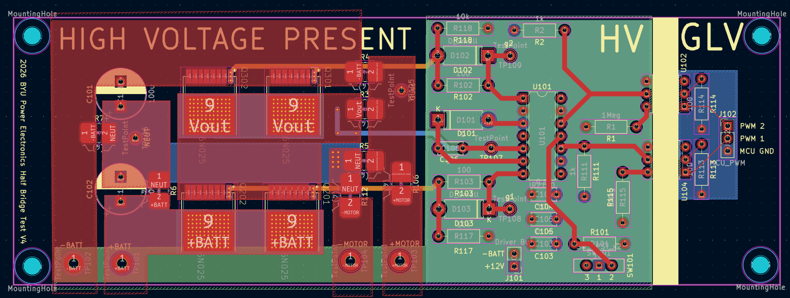
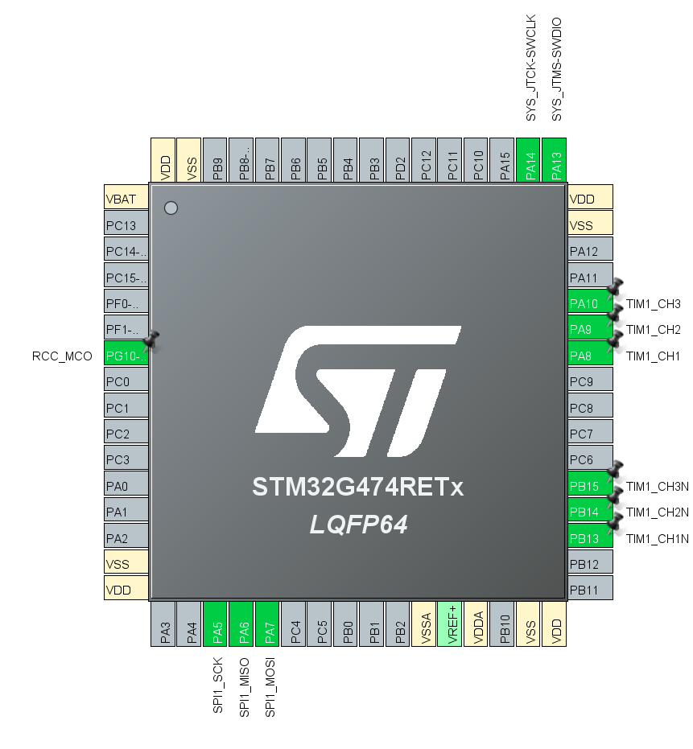

PROJECT 05 / ELECTRONICS
Custom electric motor controller
An STM32 motor controller with a custom half-bridge board and resolver feedback.

01 / OVERVIEW
The project
Control signals from the STM32 drive a custom half-bridge board, which drives the motor. A resolver connected to the motor feeds back into the STM32, closing the control loop.
02 / SYSTEM OUTLINE
How it connects

03 / COMPONENTS
Hardware & software
- STM32G474 microcontroller with timer PWM outputs, shown in the pinout.
- Custom half-bridge PCB with high-voltage and gate-drive circuitry.
- Motor speed and torque control.
- Resolver feeding motor feedback into the STM32.
04 / PROJECT IMAGES
A closer look

